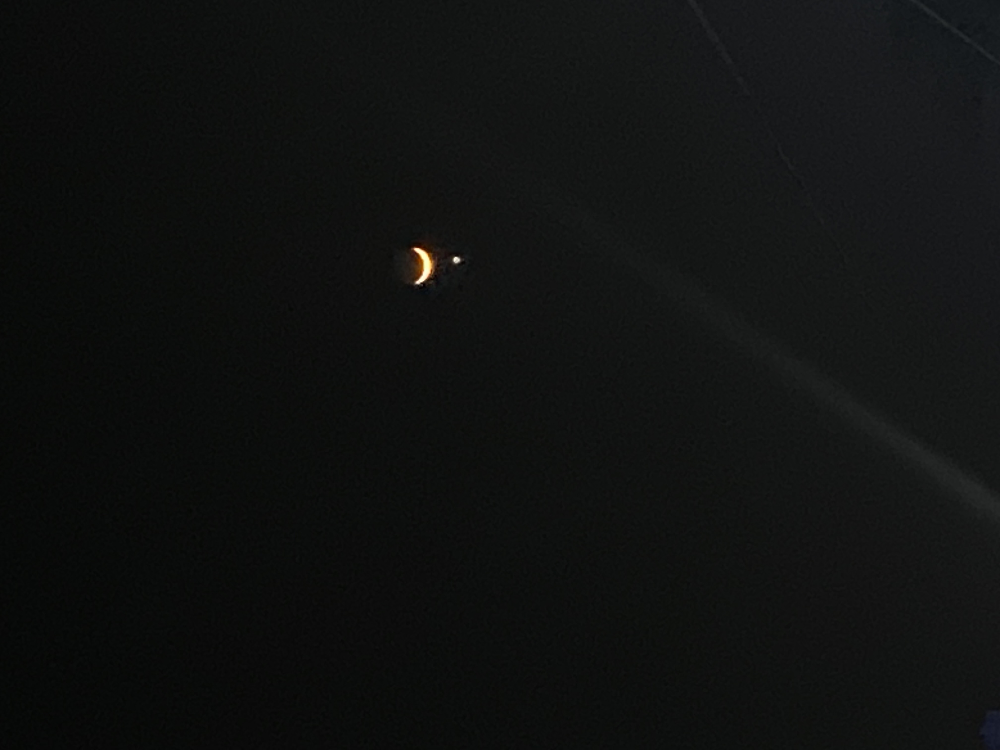

Pretty much everyone knows the song, "When the moon hits your eye like a big pizza pie, that’s amore!" The lyrics are so iconic that you’ve likely seen them used to caption a photo of that beautiful glowing ball in the sky at least once. Not for nothing, the moon does have a way of cranking up the romance, whether you’re gazing at it from a candlelit dinner al fresco or a picnic blanket up in the mountains. In those moments, the moon is so bold and bright that it’s practically begging you to take an Instagram of it. (At least, that's totally what it seems like, right?!)
